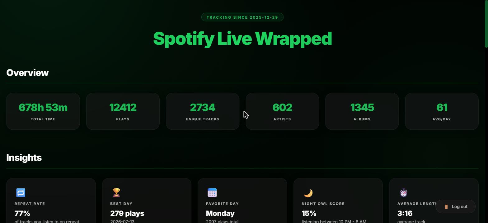
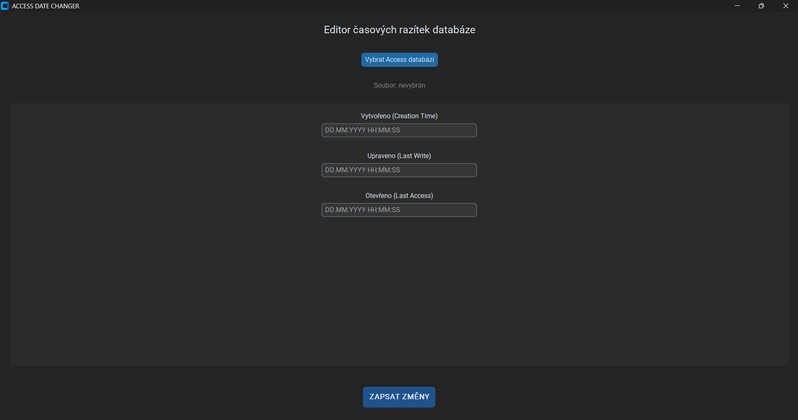

General emotional connector for LLMs
My biggest project. If it works, it rewrites how people think about LLMs. The principle is translating human neurology and chemistry into ones and zeros.
Student at the Secondary School of Applied Cybernetics. Freelance websites, apps and tools, in Czech and English.


My biggest project. If it works, it rewrites how people think about LLMs. The principle is translating human neurology and chemistry into ones and zeros.
A hardware project built around microcontrollers. Details when it's ready.
Turning anything into text, readable or not.
A connector that makes Linux easier to actually use.
Learning and occasionally using: Python, HTML, CSS, JavaScript, C++, C#, Lua
Node.js, Linux, VS Code, IntelliJ IDEA, Arduino, Git, DaVinci Resolve
Freelancer, open to anything: rebuilds of old websites, brand new startups, for individuals, sole traders and companies. Usually through a DPP contract, other arrangements possible, but that one works best.